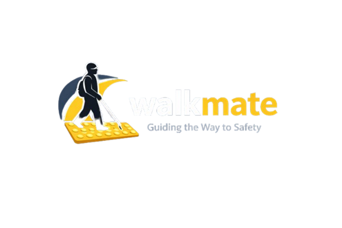

Pre-Sales Solution Case
AI 기반 보행 안전 솔루션
B2G / B2B 확장 가능
- 보행 리스크를 서비스가 아닌 제안 가능한 솔루션으로 구조화
- PoC, 데모, 운영 데이터까지 연결한 프리세일즈형 프로젝트

Problem
문제는 길안내가 아닌 전방 위험 대응 공백
- 시각장애인 전방 장애물 인지 어려움
- 기존 내비게이션은 경로만 안내
- 위험 요소 미반영
- 보행 환경 데이터 축적 구조 부재
- 결과: 안전 리스크와 운영 공백 동시 발생
Solution
위험 인지 + 음성 안내 + 운영 데이터화
- 온디바이스 AI 기반 실시간 장애물 탐지
- 음성 중심 보행 안내
- 완전 hands-free UX
- 위험 데이터 → DB → 관리자 대시보드 연결
- 사용자 경험과 운영 가시성 동시 확보
How It Works
고객 앞에서 바로 보이는 end-to-end 흐름
- 카메라 → AI 탐지
- 이미지 → S3 업로드
- 메타데이터 → PostGIS 저장
- 관리자 대시보드 → 실시간 시각화
- 데모 포인트 → 위험 감지부터 운영 화면까지 한 번에 설명 가능
My Role
팀장 / Frontend / 데모 설계 주도
- 사용자 UX 설계
- 데모 흐름 설계
- 모바일·AI·백엔드 end-to-end 연결
- 고객 관점 설명 포인트 구성
- 기술을 "도입 이유"로 바꾸는 메시지 정리
Technical Decisions
기술 선택 기준 = 고객 체감 가치
- TTS Priority Queue → 음성 충돌 방지
- TTS Priority Queue → 사용자 피로도 감소
- Sensor Fusion → GPS + 나침반 결합
- Sensor Fusion → 방향 안정화
- RESTful API 개선 → 프론트/백엔드 연동 안정성 확보
- 온디바이스 AI → 네트워크 없이도 실시간 탐지 가능
Business Value
고객이 비용을 지불할 이유
- 지자체 → 위험 구역 모니터링
- 지자체 → 행정 비용 절감
- PM 업체 → 킥보드 견인 비용 감소
- PM 업체 → 운영 효율 개선
- ESG 기업 → 사회적 가치 창출
- ESG 기업 → 데이터 기반 임팩트 측정
Sales Point
기술을 파는 사람처럼 설계하고, 설명하고, 데모한 경험
- 기술을 고객 가치로 번역한 경험
- end-to-end 데모 및 PoC 설계 경험
- 기술 + 비즈니스 구조를 동시에 이해
- 사용자 / 기관 / 기업 관점 설명 가능
- B2G / B2B 확장 논리까지 포함한 제안 경험